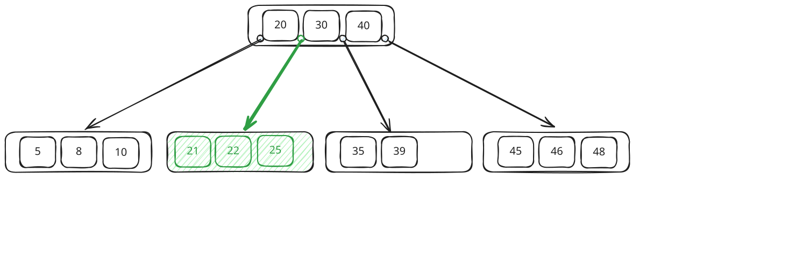
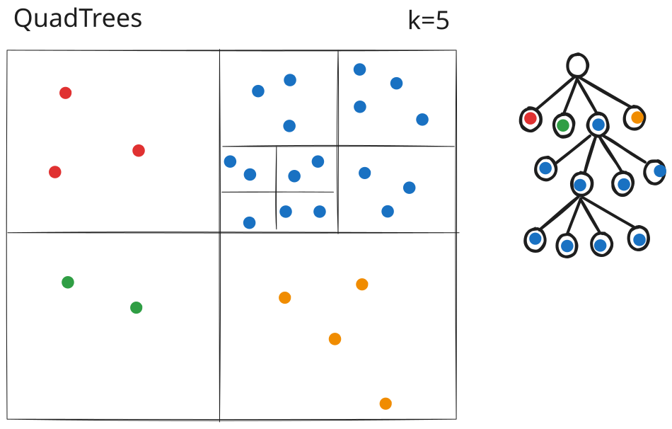
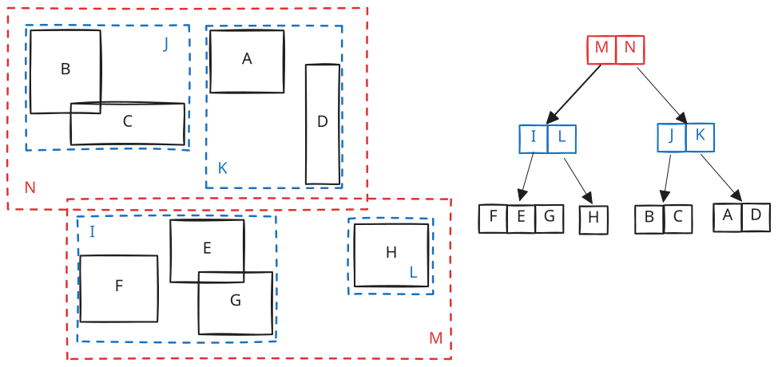
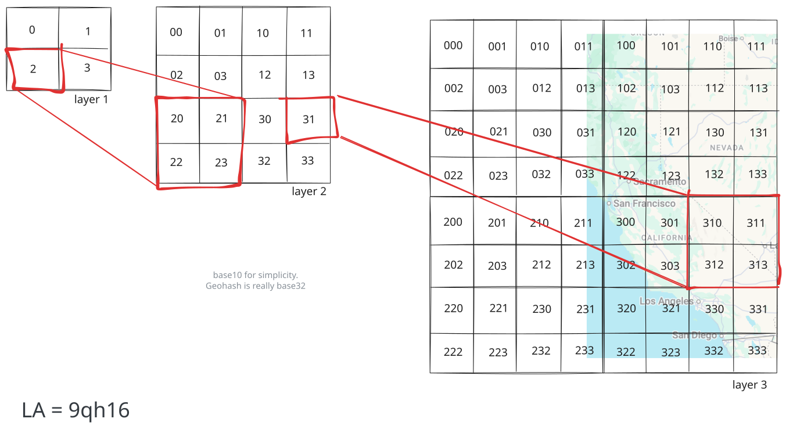

Advanced Topics
Proximity Search
Learn how production systems index latitude and longitude for fast nearby queries, from spatial trees to encoded keys like geohash, S2, and H3.
Proximity search is one of those oddly specific topics that's somehow become a regular in system design interviews. It shows up anytime you're searching by location instead of by ID or value, like drivers near a rider, restaurants near a user, or people near a location.
At first glance this doesn't seem too hard, since databases are great at sorting. For example, we can ask our database to find every user between the ages of 20 and 25 and it'll come back in milliseconds. So why doesn't it work to find every driver within 2 kilometers of a rider? The two queries hit the same database over the same volume of data, yet one returns instantly and the other turns into a full table scan.
The age query is fast because a B-tree keeps sorted keys packed together on disk. 20 sits next to 21 which sits next to 22, all packed onto the same page, so asking for "everyone between 20 and 30" turns into a single seek followed by a short sequential read, which is about the easiest thing you can ask a modern database to do.

Age B-three
Location doesn't work the same way. You have two numbers, latitude and longitude, and what you actually care about is the straight-line distance between points. A single B-tree only knows how to sort on one of those numbers at a time. Index on latitude and you get a horizontal strip of the earth. Index on longitude and you get a vertical strip. Even a composite index on both columns can't save you, because a B-tree sorts by the first column and only breaks ties with the second, so the database still effectively sorts on a single dimension, and the strip it pulls back still holds millions of rows, none of them ranked by distance from the rider. So it falls back to the brute-force version, computing the real distance from each driver to the rider one row at a time and discarding everyone past 2 kilometers.
The root problem is that a one-dimensional sort order can't preserve two-dimensional closeness. Flatten the map down to a single sorted axis and points that are neighbors on the ground can land far apart in the index. The rest of this article is about the two ways production systems recover enough of that closeness to make an index useful again.
Almost every system you'll reach for in an interview takes one of two approaches, and which one fits comes down to the shape of your data. If your data is geometric, full of polygons, roads, and delivery zones where containment and intersection matter, you want a custom tree that understands shapes, which is what PostGIS and Elasticsearch give you. If your data is mostly points that move constantly, like drivers or live user locations, you want to flatten each location into a single sortable key that an ordinary index already handles, which is the trick behind Redis geospatial, geohash, S2, and H3. Once you know which approach a system takes, its tradeoffs fall right out.
One more idea ties the whole field together. A spatial index almost never produces the final answer on its own. What it does is turn "check every row" into "check a small candidate set," and then you finish the job with exact distance or geometry math on that handful of candidates. Every structure we're about to look at is just a different way to generate that candidate set cheaply.
Custom Spatial Trees
The first approach builds a purpose-made tree for spatial data. The trick that makes these work in a database, rather than just in memory, is shaping the tree to behave like a B-tree on disk, with balanced page-sized nodes and predictable depth. We'll walk through three of them, and each one solves a problem the previous design couldn't, so the progression reads as a clean chain of fixes rather than a pile of unrelated structures.
Quadtrees
The quadtree came first, and it's still the cleanest way to build intuition for the whole problem. The trick is to turn the map itself into a tree. The whole map is the root node. You split it into four quadrants, and each quadrant becomes one of its four children. Any quadrant that still holds too many points gets split into four again, growing another level beneath it, and you keep recursing until every leaf holds few enough points to scan directly. That four-way split at every node is where the name quadtree comes from, and the points themselves live only in the leaves.

Quadtree
To search it, you walk down from the root, at each node comparing your query point to the cell's midpoint, north or south and east or west, and dropping into the matching quadrant until you reach a leaf. The points in that leaf, plus the handful in the neighboring leaves so you don't miss anyone sitting just across a boundary, are your candidate set, and exact distance math on that small set picks the winners.
One of the nicest things about a quadtree is that it adapts to the density of your data. A neighborhood like Manhattan, packed with pins, turns into a deep tree, while a lake upstate stays a single coarse cell because there's nothing up there worth indexing, so you never waste space subdividing empty water.
The trouble starts to show up at scale, in two ways. The first is depth. Splits always land at the geometric midpoint of a cell, never where the data sits, so a dense cluster like Manhattan keeps getting halved until the points finally separate. You might burn ten or more levels reaching a leaf downtown while a query in rural Vermont finishes in two. Latency now depends on where you're looking, and the busiest regions are the slowest, so you can't reason about worst-case performance easily.
The second is disk. A quadtree is a pointer structure, so every node sits at an arbitrary address holding pointers to its children. That's fine when the whole tree lives in RAM, where following a pointer is a cheap memory lookup, but a database can't assume that. It reads from disk in fixed-size pages, and each pointer you follow risks a random read for a page that isn't loaded yet, so a few hops in you're mostly waiting on the disk instead of doing work.
Quadtrees are still everywhere in memory, from Google Maps tiles to game-engine collision detection, but for an index that has to live on disk and stay fast when it overflows RAM, we need something sturdier.
k-d Trees and BKD Trees
Next comes the binary cousin, the k-d tree.
Instead of splitting on every dimension at once into four quadrants, a k-d tree alternates between them. The first level of the tree splits on the x coordinate, the next level splits on y, the level after that goes back to x, and so on, cycling through one dimension at each step as you descend. What you end up with is a binary tree for multi-dimensional data, balanced as long as you always split at the median, and it was the workhorse for nearest-neighbor search for decades.
That median split is the whole difference from a quadtree, and it's worth making concrete. Picture ten drivers strung along one street, nine of them bunched at the east end and a single straggler out west. A quadtree cuts at the geometric middle of the block, so its first split drops the lone western driver on one side and leaves all nine crammed together on the other. Now the crowded half has to be split again, and again, each cut slicing through mostly empty space to pry the cluster apart. That's the Manhattan problem from before. A k-d tree cuts at the median instead, the fifth driver counting from the west, so the dividing line lands right in the thick of the crowd where the separating actually needs to happen, and five drivers end up on each side however lopsided the street is. Every cut halves the number of points rather than the area, which is what keeps a k-d tree balanced at depth log(n) whether you're indexing a packed downtown or an empty stretch of highway.
It inherits the same disk problem as the quadtree, though. It's pointers all the way down, with no clean mapping onto disk pages, which makes it fast in memory and painful the moment it has to live somewhere larger than RAM.
The modern fix is the BKD tree, short for block k-d tree. Rather than one point per node, points get packed into blocks sized to a disk page, and the whole tree is built once from a batch of data. That makes a BKD tree essentially write-once, built for a chunk of data that doesn't change, which is a constraint we'll come back to when we talk about moving drivers.
This is what Elasticsearch uses for its geo fields today. So a geo query in Elasticsearch is really the same k-d tree idea, repackaged into the kind of disk-friendly, block-structured index a database can lean on.
R-trees
The R-tree was the first spatial index built from the ground up for on-disk database use, and it solved two problems the earlier trees couldn't.
The first was the problem of shapes. Every index we'd looked at until now assumed your data was a point, something that lives at a single latitude and longitude, like a driver, a pin, or a user's location. Real geographic data isn't always so cooperative. A highway is a line, a county is a polygon, and even a Starbucks, which is itself a point, has a delivery zone that's a polygon. You can't meaningfully drop a county into a single quadtree cell, because a county doesn't sit at one spot, it sprawls across many.

R-tree
The second was the problem of disk, the same constraint that had defeated every structure before it. A database index needs the spatial equivalent of a B-tree, something that stays balanced as the data changes, reads quickly off disk, and updates cheaply every time a driver moves. The pointer-heavy, in-memory structures that came before just weren't going to cut it for something that has to live on disk.
The R-tree's answer was the minimum bounding rectangle. The idea is to wrap every object in the smallest rectangle that fully contains it, with the sides held parallel to the latitude and longitude axes. A point becomes a degenerate rectangle with zero width and height, a highway becomes a long thin sliver, and a county becomes a big sprawling box. Once everything is wrapped, nearby rectangles get grouped inside a larger enclosing rectangle, those groups get enclosed in bigger ones, and the nesting carries all the way up to the root.
What makes this work as a database index is that the tree stays balanced, exactly like a B-tree. Every leaf sits at the same depth, so any query touches the same predictable number of pages, and every node is sized to fit inside a single disk page. Inserts and deletes keep the whole thing balanced by splitting and merging those pages, the same way a regular B-tree does.
Unlike quadtree cells, R-tree rectangles can overlap, and that overlap is the tradeoff to watch. If your query point lands inside two bounding rectangles at once, you have to descend both branches and check both subtrees. A sloppy insertion strategy produces lots of overlap, which means lots of branches to follow, which drags performance down. The fix everyone actually ships is the R*-tree, a refinement that keeps overlap low through smarter insertion heuristics, and those heuristics are what almost every modern R-tree implementation is built on.
R-trees are the workhorse of production spatial indexes. PostGIS builds its spatial indexes on Postgres's GiST framework, which gives you R-tree-style bounding-box behavior, while SQLite and Oracle Spatial ship their own R-tree variants. If your problem involves real geometry, like "does this delivery zone contain this address" or "does this road cross this county," this is the approach you want.
Encoded Keys
Every spatial tree we just looked at is a custom structure, and they all work, but they're a lot of machinery to carry around. Your database needs special indexing code, special query code, special tooling, and usually a dedicated spatial extension installed before any of it runs.
The encoded-key approach skips the custom tree entirely. Instead, you turn each latitude and longitude into a cell ID or a sortable key that an ordinary index (like a B-tree) can use to narrow the search down to a small patch of the map.
This approach is popular because it reuses infrastructure every database already ships.
Geohash
Geohash takes decades-old space-filling-curve math and turns it into something you can compute in a few lines of code. A space-filling curve is just a single line threaded through two-dimensional space so that points close on the map stay close along the line.
The idea is simple enough to hold in your head. You divide the whole world into a grid of 32 cells and label each one with a single character. Your location falls into one of them, and that's your first character. Now take that cell and divide it into 32 smaller cells. Your location falls into one of those, and that's your second character. Keep recursing as deep as you want. Each additional character zooms in further, so a five-character geohash is roughly five kilometers across, and nine characters gets you down to about five meters.

Geohash
Underneath the string, a geohash is just bits. Each character picks one of 32 options, which is exactly 5 bits, so the string dr5ru is 25 bits grouped into five letters for humans to read. Read the same 25 bits straight through as a number and you've got an integer with the same bits in the same order. That's why Redis can store a geohash as a 52-bit integer and Postgres can store it as text, and both indexes behave identically.
The payoff is that keys sharing a prefix are usually near each other. That drops straight out of the construction. Two points share a prefix only if they fell into the same cell at every level that prefix covers, and each extra shared character shrinks that shared cell. If two points share their first five characters, they sit inside the same five-kilometer box, and if they share six, that shrinks to about a kilometer. That predictable locality is what lets you run a proximity query on any sorted index, in any database. WHERE geohash LIKE 'dr5ru%' is a regular B-tree prefix scan, the same kind of scan you'd run on any text column.
The same idea shows up in Redis geo commands. When you call GEOADD, Redis interleaves the latitude and longitude into a 52-bit geohash integer and stores it as the score in a sorted set. A nearby query becomes a ZRANGEBYSCORE over those scores, which is the prefix-scan idea from a moment ago wearing different syntax.
There's one catch you have to know, because it bites people. Geohashes have edge cases at cell boundaries. Two points a meter apart can land in completely different cells, and get completely different prefixes, if they happen to straddle a boundary. Picture a rider standing right on the edge of cell dr5ru. The closest driver might be ten meters away in the neighboring cell dr5rg, and a naive prefix scan over dr5ru would miss them entirely.
The standard fix is the 3x3 trick. You compute the cell your query point lands in, then walk to the eight neighboring cells, and query all nine as a unit. Now you can't miss anyone within one cell's distance of you, no matter how close to a boundary you are. Then you post-filter the results by exact distance to drop the corners that are technically inside your query window but actually too far away. Almost every encoded-key index in production does some version of this query-the-ring-and-post-filter dance.
S2
Geohash works beautifully for a single city, but it starts to hurt across the whole globe, because it treats latitude and longitude as a flat rectangle and the earth isn't flat. A degree of longitude is about 111 kilometers at the equator and shrinks toward zero at the poles, so one geohash cell is a fat square near the equator and a thin sliver up north. At planet scale you want cells of roughly equal area everywhere, and an ordering that respects distance on a sphere instead of a rectangle.
Google's S2 is the spherical cousin of geohash. It wraps the globe in a cube and projects onto the six faces, which lets it carve out cells that stay roughly the same size anywhere on earth, each with a 64-bit hierarchical ID you can truncate to get a parent cell. Because S2 actually understands the sphere, it handles cases a flat grid mangles, like a polygon that crosses the antimeridian (the 180-degree longitude line where coordinates wrap from +180 to -180). It's the cell system underneath MongoDB's 2dsphere index.
H3
Uber open-sourced H3 and runs it for dispatch and surge pricing. Its twist is hexagons instead of squares. A square cell has two kinds of neighbors. Four sit across its edges, and four sit across its corners, farther away. That lopsidedness makes "everything within N rings of me" queries and heat maps messy. A hexagon has six neighbors, all roughly the same distance away, which is much cleaner for the ring-based analytics Uber runs constantly. Like geohash and S2, each cell is a 64-bit hierarchical ID.
H3 differs in one way that matters. Geohash and S2 lay their cells along a space-filling curve, so a numeric range scan sweeps up a neighborhood in one shot. H3 doesn't, so close IDs aren't reliably close on the map. Instead it hands you cheap grid math to compute the ring of cells around any cell directly, and you look those exact IDs up.
The dispatch pattern falls right out of that. Snap each driver to an H3 cell, say a 200-meter one, and when a rider opens the app, take their cell plus the surrounding ring, grabbing another ring out if you need a wider net. Then you run WHERE h3_cell IN (list of cell IDs), a plain lookup on an ordinary integer index, and post-filter by exact distance. It's all cheap writes and cheap candidate generation with no spatial extension anywhere, which is the shape you want when location updates are arriving constantly.
In an interview, you rarely need to name H3 versus S2 versus geohash to score the point. What lands is explaining why a plain index fails on lat/long, then reaching for the boring production option and walking the tradeoff out loud. Name the specific library if you know it, but the reasoning is what tells your interviewer you actually understand the problem.
Which Should You Use?
Most production systems you're likely to reach for fall into one of the two approaches we've covered, a custom spatial tree or an encoded key, and choosing between them comes down to the shape of your data.
Reach for a custom spatial tree when your data is geometric, full of polygons, roads, delivery zones, and questions of containment or intersection. You need the database to understand shapes, and you're willing to pay for a spatial extension and pricier writes to get it. PostGIS, with its R-tree-style GiST index, is the usual default, and an R-tree handles points, lines, and polygons alike. The catch is writes. Rebalancing rectangles is real work, and the BKD variant Elasticsearch uses is essentially write-once, so neither loves data that churns.
Reach for encoded cells when your data is mostly points that move constantly, like drivers, users, devices, or live locations. Here you care far more about cheap writes and fast candidate generation than about polygon math, and a geohash, S2, or H3 value on an ordinary index gives you exactly that. A moving driver is a single integer update, which is why this approach scales to millions of writes a second. The price you pay is that you're mostly limited to points, and the cell boundaries mean you always query a ring of neighbors rather than one exact cell.
Again, whichever one you land on, the index only ever hands you candidates. It narrows "check every row" down to a small patch of the map, and you still finish the query with exact distance or geometry math on that handful. Once that clicks, the specific library barely matters.
Spatial tree for shapes. Encoded cells for moving points. And always, always post-filter.
Test Your Knowledge
Answer the question below to find your gaps.
Question 1 of 15
Why does a B-tree index on latitude alone fail to speed up a query like "find all drivers within 2km of this rider"?
1
Latitude values change too frequently for the index to stay current
2
B-trees only support exact-match lookups, not ranges
3
It selects a horizontal strip of the earth that still contains a huge number of rows, none ranked by distance
4
B-trees can't index floating point numbers precisely